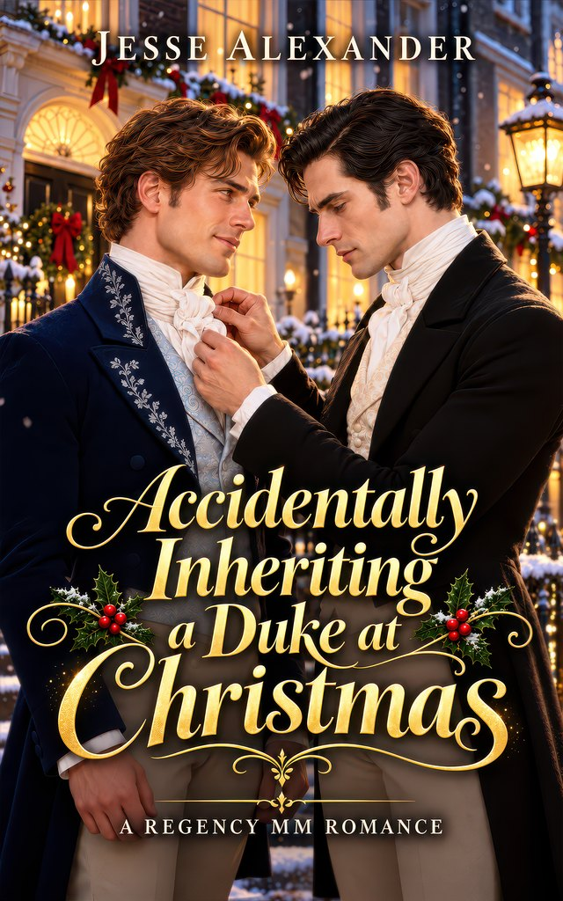

Standalone holiday story
Accidentally Inheriting a Duke at Christmas
A snowball was a terrible way to meet a duke.
The duke was supposed to be dead. David probably shouldn’t have hit him with a snowball.
American carpenter David Talbot has inherited a fortune and filled a gloomy London mansion with Christmas cheer. Then Ashton Carrington, Duke of Aylesford, comes home and demands his life back.
The Duke is cold, commanding and entirely too attractive when he’s furious. David is happy to return the title. He’d rather like to keep the home.
Unfortunately, untangling an inheritance takes time. Now a duke who prizes his privacy must share his roof with a man who charms his servants, laughs at his scowls and has a distressing habit of rolling up his sleeves.
Ash wants order. David keeps bringing him Christmas pastries and asking impertinent questions. Neither considers the adjoining bedchambers a sensible arrangement.
David came looking for somewhere to belong. Falling for the aristocrat who wants him gone would be a particularly foolish way to find it.
A slow-burn M/M Christmas romance that turns very spicy, set in a fantasy Regency England. Expect grumpy/sunshine attraction, forced proximity and a happily ever after.
- Grumpy duke x sunshine carpenter
- Forced proximity (and adjoining bedchambers)
- A slow burn that turns very spicy
- A Christmas masquerade
- Found family
- Happily ever after
Fantasy regency Free on Kindle Unlimited
Read on AmazonAlso available in paperback.
More to read for free
Free stories, bonus scenes, and recipe books from all of Jesse's worlds live on the freebies page. See all freebies →